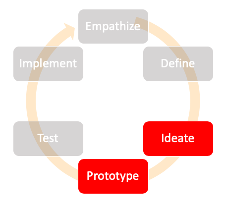

The Explore stage is mainly for brainstorming ideas, exploring what methods work the best, creating frameworks, workflows, and creating a prototype. The two phases that fall into this bucket are Ideate and Prototype.
Ideate
Once the research is done and organized, this phase is the creative phase where all the ideas flood in and an outline is created.
Prototype
TOnce the ideas are drafted, this phase comprises of the realizing the ideas, designing frameworks and workflows.
